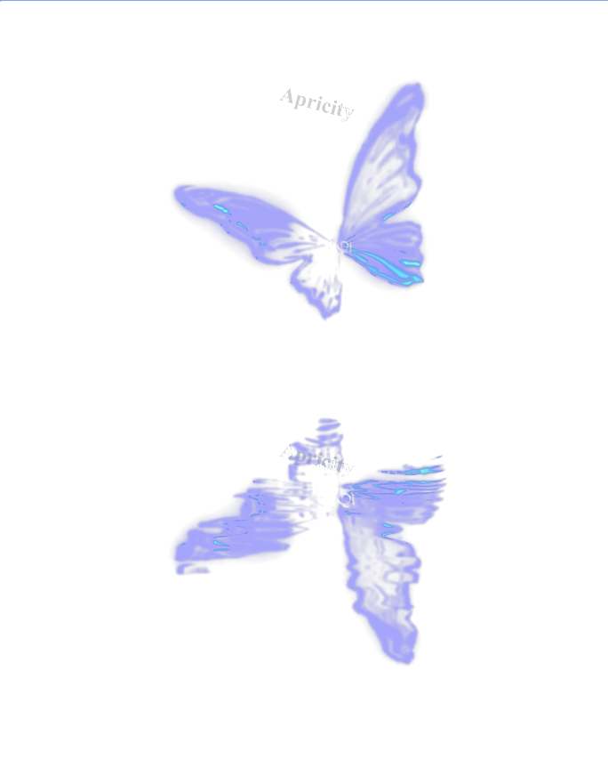

渊
江渊 · 池渊
有幸听到您的故事，是我的荣幸
向 下
The Listener
在这里a place to be heard
我会做一个合格的倾听者。
无须担心——我会承接住你所有的情绪。曾在 空山泣 · 观宴（审核均过）陪伴过许多夜。
· You can tell me anything
· our conversation is absolutely confidential
About
关于我江渊 / 池渊
或许 · 女
时间归零后的重置 金牛
会是新生 INFP
19 · INFP · 金牛座(H) · 极品-中性音。梦中的身影，会是我吗。
虚拟恋病恋树洞纯连占卜光遇（可依游戏）
Style
风格how I accompany you
引导 · 劝导 · 安慰
理性分析 · 提供方案
Pricing
售价how we begin
"Only by stepping out of the mist can we know the beauty of sunshine when it falls."
Emotion
脸颊处滑落的what falls from the cheek
是情绪
也是泪痕

Notes
希望您可以了解的a few things to know
- 我会在您阐述完成之后，提出我的建议。
- 如果您喜欢以对话的方式，请提前告知。
- 我的建议仅仅只是我个人看法，您可以根据实际情况进行调整。
- 中途如有情况未对应上，请告知我一声。
- 在和您对话时，我是 85% 建议 · 15% 安慰。
- 我会根据您的情况，提出几点方案供您选。
- 请勿因为我的年龄，质疑我的实力。
- 希望我的见解可以对您有所帮助。
Craft
话术 · 板评words & responses
话术大部分都涉及单内老板隐私，这里不做展示；如若好奇，可以亲身体验。